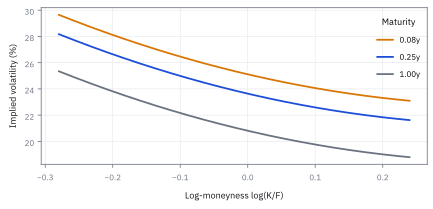

14.5 The Volatility Surface and Term Structure
implied volatility ของทุก strike และทุกอายุต่อกันเป็นผืนเดียว การเชื่อมต้องทำบน total variance ซึ่งบวกกันได้ตามเวลา และผืนต้องผ่านกฎสองข้อไม่ให้มีเงินฟรี
option บน SPX อายุ 1 เดือนซื้อขายที่ implied volatility 30% อายุ 3 เดือนที่ 24% (ทั้งคู่ที่ strike เท่ากับ forward) ลูกค้าขอราคา call อายุ 2 เดือน ซึ่งไม่มีในตลาด เทรดเดอร์ฝึกหัดเฉลี่ยตรง ๆ ได้ 27% เพราะ 2 เดือนอยู่กึ่งกลาง ถูกไหม และถ้าผิด ผิดเป็นเงินเท่าไรต่อสัญญา?
ลองตอบก่อนเปิดเฉลย
ผิด สิ่งที่บวกกันตามเวลาคือ variance คูณเวลา ไม่ใช่ความผันผวน $0.30^2(1/12)=0.0075$ กับ $0.24^2(3/12)=0.0144$ กึ่งกลางคือ 0.01095 แปลงกลับได้ 25.63% ไม่ใช่ 27% ที่ 27% call อายุ 2 เดือนที่ strike เท่า forward จะมีราคา 219.21 จุดแทน 208.11 แพงไป 11.10 จุด หรือ \$1,110 ต่อสัญญา และถ้าอายุ 3 เดือนเป็น 18% แทน การเฉลี่ยตรง ๆ จะให้ราคาที่เปิดช่องเงินฟรีเลย
สิ่งที่เราจะสร้าง
14.4 ดู smile ที่อายุเดียว หน้านี้วางทุกอายุเข้าด้วยกัน implied volatility ของทุก strike และทุกอายุคือผืนหนึ่งผืน เรียกว่า volatility surface โต๊ะใช้มันตั้งราคาสัญญาที่ strike หรืออายุไม่ตรงกับในตลาด ซึ่งเป็นงานส่วนใหญ่ของการเสนอราคาลูกค้า
เริ่มจากตัวอย่างมือว่าทำไม variance บวกกันได้แต่ความผันผวนบวกไม่ได้ ตั้งแกนใหม่ (forward, log-moneyness, total variance) เชื่อมอายุ 2 เดือนให้ถูก ดูว่าการเชื่อมผิดแกนสร้างเงินฟรีอย่างไร พิสูจน์กฎตามแกนเวลาและแกน strike ตรวจผืนทั้งผืน ดูว่าทำไม skew เอียงซ้าย แล้วจบที่สิ่งที่ผืนตั้งราคาได้และตั้งราคาไม่ได้
ศัพท์ที่ใช้ในหัวข้อนี้
- Volatility surface
- ตาราง implied volatility เรียงตาม strike ในแนวหนึ่งและตามอายุในอีกแนว ใช้อ่านค่าของสัญญาที่ไม่มีคนซื้อขาย ต้องมองเป็นผืนเดียวเพราะราคาแต่ละใบผูกกันด้วยกฎ no-arbitrage
- Term structure
- implied volatility ที่ strike เดียวเทียบอายุ ตลาดปกติมักเพิ่มตามอายุ วันที่ตลาดเครียดอายุสั้นแพงกว่า เส้นจึง “หัวกลับ” แบบโจทย์เปิดเรื่อง
- Total variance
- $w=\sigma_{\rm imp}^2T$ คือ variance ของ log ราคาตลอดอายุ บวกกันได้ตามเวลาเพราะก้อนสุ่มของแต่ละช่วงอิสระกัน (9.1) จึงเป็นแกนที่ถูกต้องสำหรับเชื่อมค่าระหว่างอายุ
- Forward variance
- variance ต่อปีของช่วงระหว่างสองอายุ คือความชันของ total variance ต้องไม่ติดลบ ถ้าติดลบแปลว่าราคาบนจอเปิดช่องเงินฟรีตามแกนเวลา
- Calendar และ butterfly arbitrage
- calendar คือ option อายุยาวถูกกว่าอายุสั้นเมื่อเทียบที่ moneyness เดียวกัน butterfly คือราคาสาม strike เรียงกันแล้วพอร์ต butterfly มีต้นทุนติดลบ ทั้งสองเป็นเงินฟรีที่ล็อกได้โดยไม่ต้องปรับพอร์ต (static arbitrage)
- Exotic option
- สัญญาที่จ่ายเงินขึ้นกับเส้นทางของราคาหรือเงื่อนไขพิเศษ เช่น knock-in put ที่มีผลเฉพาะเมื่อราคาแตะระดับที่ตกลงไว้ก่อน ผืนความผันผวนตั้งราคาสัญญาแบบนี้ได้ไม่ครบ
สัญลักษณ์และหน่วย
| สัญลักษณ์ | ความหมาย | หน่วย |
|---|---|---|
| $F(T)$ | forward สำหรับอายุ $T$ คือ $S_0e^{(r-q)T}$ | จุด |
| $k,\ x$ | log-moneyness $\ln(K/F)$ และอัตราส่วน $K/F$ | ไม่มีหน่วย |
| $\sigma_{\rm imp}(k,T),\ w(k,T)$ | implied volatility และ total variance $\sigma_{\rm imp}^2T$ | ต่อรากที่สองของปี, ไม่มีหน่วย |
| $T_1,\ T_2$ | อายุสั้นและอายุยาวของสองจุดที่ใช้เชื่อม | ปี |
| $v_{12}$ | forward variance ต่อปีระหว่าง $T_1$ กับ $T_2$ | ต่อปี |
| $D,\ c(x,T)$ | discount factor $e^{-rT}$ และราคา call ที่หารด้วย $DF$ | ไม่มีหน่วย |
| $C_K,\ C_{KK}$ | อนุพันธ์ครั้งแรกและครั้งที่สองของราคา call เทียบ strike | ไม่มีหน่วย, ต่อจุด |
| $V,\ E,\ \sigma_V,\ \sigma_E$ | มูลค่าบริษัท หุ้น และความผันผวนของทั้งสอง (ขั้นที่ 9) | USD, ต่อรากที่สองของปี |
| $\rho$ | correlation ระหว่างก้อนสุ่มครึ่งปีแรกกับทั้งปี (ขั้นที่ 11) | ไม่มีหน่วย |
ขั้นที่ 1 — ลองด้วยมือ: variance บวกกันได้ ความผันผวนบวกไม่ได้
โจทย์ให้อะไรมาบ้าง: สมมติว่าเดือนแรกดัชนีแกว่งด้วยความผันผวน 30% ต่อปี และสองเดือนถัดไปแกว่งด้วยค่าคงที่ $\sigma_f$ ที่ยังไม่รู้ ก้อนสุ่มของแต่ละช่วงอิสระกัน ตลาดบอกว่าทั้ง 3 เดือนมีความผันผวน 24% ต่อปี หา $\sigma_f$ ให้ $\operatorname{Var}_{a\to b}$ คือ variance ของ log ราคาจากสิ้นเดือนที่ $a$ ถึงสิ้นเดือนที่ $b$
คำตอบ: สองเดือนหลังต้องแกว่งแค่ 20.35% ต่อปี ค่าเฉลี่ยแบบถ่วงเวลาของความผันผวน $\tfrac13(30\%)+\tfrac23(20.35\%)\approx23.56\%$ ไม่ใช่ 24% สิ่งที่รวมกันได้ตรง ๆ คือ variance คูณเวลา เหตุผลเดียวกับ 9.1: Brownian ของช่วงที่ไม่ทับกันอิสระกัน variance ของผลรวมจึงเท่ากับผลรวมของ variance
ตรวจเองใน 10 วินาที: $0.0075+0.0414(2/12)=0.0075+0.0069=0.0144=0.24^2/4$ ตรง และ 20.35% ต่ำกว่า 24% มาก เพราะเดือนแรกที่แกว่ง 30% กิน variance ไปเกินครึ่ง
ขั้นที่ 2 — แกนที่ถูกต้อง: forward, log-moneyness และ total variance
ขั้นที่ 1 บอกว่าการเชื่อมข้ามอายุต้องทำบนปริมาณที่บวกกันได้ ขั้นนี้นิยามแกนของผืนให้ตรงกับเรื่องนี้ ส่วนแกน strike เทียบกับ forward ของอายุนั้น เพราะดอกเบี้ยและปันผลเลื่อนจุดกลางของแต่ละอายุไปคนละที่ (14.4) สามบรรทัดแรกเป็นนิยาม บรรทัดที่เหลือได้จากขั้นที่ 1
บรรทัดที่สี่คือขั้นที่ 1 ในรูปทั่วไป: variance ทั้งหมดถึง $T_2$ เท่ากับ variance ถึง $T_1$ บวกส่วนของช่วงถัดไป $v_{12}$ คือ forward variance ต่อปี ซึ่งเป็น variance จึงติดลบไม่ได้ ผลคือ total variance ต้องไม่ลดลงเมื่ออายุยาวขึ้น แม้ความผันผวนจะลดลงได้
ขั้นที่ 3 — เชื่อมอายุ 2 เดือนบน total variance
โจทย์ให้อะไรมาบ้าง: $w_1=0.0075$ ที่ 1 เดือน $w_3=0.0144$ ที่ 3 เดือน (ขั้นที่ 1) เชื่อมเส้นตรงบน $w$ ตามเวลา แล้วแปลงกลับ จากนั้นคิดราคา call SPX อายุ 2 เดือนที่ strike เท่า forward ($S_0=5{,}000$, $r=4\%$, $q=1.5\%$ แบบ 14.4) ด้วยสองคำตอบ
คำตอบ: ควรเสนอ 25.63% ไม่ใช่ 27% ที่ 27% ราคาแพงไป 11.10 จุด หรือ \$1,110 ต่อสัญญาที่ตัวคูณ \$100 ใกล้ vega 811 จุดต่อความผันผวน 1.00 คูณ 0.0137 ถ้าเสนอ 27% ลูกค้าที่รู้เรื่องจะไม่ซื้อ ส่วนถ้าโต๊ะซื้อที่ 27% ก็จ่ายแพงไปเท่านั้น
ตรวจเองใน 10 วินาที: $0.01095\times6=0.0657$ รากคือ 0.2563 และ 25.63% อยู่ใกล้ 24% มากกว่า 30% เพราะอายุ 3 เดือนมี variance มากกว่าอายุ 1 เดือนเกือบสองเท่า น้ำหนักจึงเอียงไปทางนั้น
Figure 14.5a — ความผันผวนลดลงได้ ขณะที่ total variance เพิ่มขึ้น

ขั้นที่ 4 — เชื่อมบนความผันผวนตรง ๆ แล้วเกิดเงินฟรี
โจทย์ให้อะไรมาบ้าง: เปลี่ยนอายุ 3 เดือนเป็น 18% ส่วน 1 เดือนยังเป็น 30% เทรดเดอร์เฉลี่ยตรง ๆ ได้ 24% ที่ 2 เดือน ตรวจด้วย forward variance และด้วยราคา call ที่ strike เท่า forward หารด้วย $DF$ ซึ่งสำหรับ Black–Scholes คือ $c=2\Phi(\sqrt w/2)-1$ (ตั้ง $K=F$ ในสูตรของ 14.2 แล้ว $d_{1,2}=\pm\sqrt w/2$)
คำตอบ: 24% ที่ 2 เดือนทำให้ total variance ลดจาก 0.0096 เหลือ 0.0081 ในเดือนสุดท้าย forward variance −0.018 ซึ่งเป็นไปไม่ได้ ในหน่วยราคา call อายุ 2 เดือน (0.03907 ต่อหน่วย forward) แพงกว่า call อายุ 3 เดือน (0.03589) ทั้งที่อายุยาวกว่าให้สิทธิ์ครอบคลุมกว่า ขายตัวสั้นซื้อตัวยาวจึงได้เงินฟรี เชื่อมบน $w$ แทนได้ 21.63% และ forward variance 0.0036 ต่อปีทั้งสองช่วง ปลอดภัย
ตรวจเองใน 10 วินาที: ตัวเลข 24% ฟังดูสมเหตุสมผล ไม่มีอะไรเตือน นี่คือเหตุผลที่ระบบต้องตรวจ $w$ ที่ทุก $k$ ทุกอายุโดยอัตโนมัติ ไม่ใช่ดูด้วยตา
Figure 14.5b — เส้นที่เรียบก็ซ่อน forward variance ติดลบได้

ขั้นที่ 5 — กฎตามแกนเวลา: ราคาที่หารหน่วยแล้วต้องไม่ลดตามอายุ
ขั้นที่ 4 เห็นเงินฟรีจากตัวเลข ขั้นนี้พิสูจน์ว่ากฎทั่วไปคืออะไร หาร call ด้วยมูลค่าวันนี้ของ forward ($DF$) แล้วเทียบที่ $x=K/F$ เดียวกัน เมื่อดอกเบี้ยและปันผลรู้ค่า $M_T=S_T/F(T)$ มีค่าเฉลี่ยภายใต้ $\mathbb Q$ เท่ากับ 1 ทุกอายุ และเป็น martingale ตาม 4.1 และ 13.6
บรรทัดที่สี่ใช้ว่า $(m-x)^+$ เป็น function โค้งหงาย ค่าเฉลี่ยของ function โค้งหงายไม่น้อยกว่า function ของค่าเฉลี่ย (Jensen) ใช้กับค่าเฉลี่ยแบบมีเงื่อนไขที่ $T_1$ แล้วบรรทัดที่ห้าใช้ martingale: ค่าคาดหวังของ $M_{T_2}$ เมื่อรู้ข้อมูลถึง $T_1$ คือ $M_{T_1}$
ความหมายคือ option อายุยาวมีทุกอย่างที่อายุสั้นมี บวกเวลาแกว่งเพิ่ม
บรรทัดที่หกและเจ็ดคือสูตรของ 14.2 ที่หารหน่วยแล้ว เวลาอยู่ในสูตรผ่าน $w$ ตัวเดียว และ $c$ เพิ่มขึ้นตาม $w$ (vega บวก) กฎจึงกลายเป็นบรรทัดสุดท้าย: ที่ log-moneyness เดียวกัน total variance ต้องไม่ลดตามอายุ ไม่ใช่แค่ที่ strike เท่า forward
ขั้นที่ 6 — กฎตามแกน strike: ราคาลดลงและโค้งหงาย
ในแต่ละอายุ 14.4 ได้ว่า $C_K=-e^{-rT}\mathbb Q(S_T\gt K)$ และ $C_{KK}=e^{-rT}f^{\mathbb Q}(K)$ โอกาสอยู่ระหว่าง 0 ถึง 1 และ density ติดลบไม่ได้ จึงได้สองกฎ ในตลาดจริง strike ห่างกันเป็นช่วง $h$ อนุพันธ์ครั้งที่สองจึงกลายเป็น butterfly: ซื้อ call ปีกสองข้าง ขาย call กลางสองใบ
บรรทัดที่สามคือ payoff ของ butterfly ในวันหมดอายุ: เป็นกระโจมสามเหลี่ยม ยอดสูง $h$ ที่ $K$ และเป็นศูนย์นอกช่วง $K\pm h$ payoff ไม่ติดลบเลย ราคาวันนี้จึงติดลบไม่ได้ บรรทัดสุดท้ายได้เมื่อ $h$ เล็กจน density แทบคงที่บนฐานของกระโจม ราคา butterfly หารด้วย $h^2$ จึงคือ density ที่คิดลดแล้ว
ขั้นที่ 7 — butterfly ที่ราคาติดลบ
โจทย์ให้อะไรมาบ้าง: call SPX อายุเดียวกันสาม strike ราคากลาง: 4,900 → 112 จุด, 5,000 → 80 จุด, 5,100 → 47 จุด ($h=100$) เส้นดูเกือบตรง ตรวจกฎของขั้นที่ 6
คำตอบ: butterfly มีต้นทุน −1 จุด คือได้เงิน 1 จุดวันนี้ และถือสิทธิ์ที่จ่ายได้ถึง 100 จุดถ้าดัชนีจบที่ 5,000 และไม่มีทางติดลบ นี่คือ static arbitrage ก่อนหักต้นทุน ราคากลาง 80 ต้องไม่เกิน 79.5 ซึ่งเป็นค่าเฉลี่ยของปีกทั้งสอง
ตรวจเองใน 10 วินาที: ต่ำกว่า 4,900 ทั้งสามใบไม่จ่าย payoff เป็นศูนย์ สูงกว่า 5,100 ได้ $(S_T-4{,}900)-2(S_T-5{,}000)+(S_T-5{,}100)=0$ ทุกจุด ส่วนระหว่างนั้นเป็นบวก จึงไม่มีทางติดลบจริง
Figure 14.5c — ราคาที่เรียงเกือบตรงยังโค้งผิดทางได้

ขั้นที่ 8 — ตรวจผืนทั้งผืน
โจทย์ให้อะไรมาบ้าง: ผืนสมมติสำหรับฝึก (ไม่ใช่ข้อมูลตลาด) $\sigma_{\rm imp}(k,T)=0.20+0.06e^{-2T}-0.12k+0.15k^2$ ที่ $-0.28\le k\le0.24$ ระดับ ATM ลดลงตามอายุ ส่วน $-0.12k$ คือ skew และ $0.15k^2$ คือความโค้ง ตรวจกฎของขั้นที่ 5 บนกริด $k$ ห่าง 0.01 กับอายุ 0.05 ถึง 1.5 ปี และกฎของขั้นที่ 6 ด้วยราคา call ที่หารหน่วยแล้วบนกริด strike ห่าง 0.0025 ของ forward
คำตอบ: ผืนนี้ผ่านทั้งสองกฎในช่วงที่วาด: total variance เพิ่มตามอายุทุก $k$ (ขั้นเพิ่มที่น้อยที่สุดคือ $2.9\times10^{-5}$ ต่อก้าว 0.001 ปี) และ butterfly ทุกตัวบนกริดเป็นบวก ปีกซ้ายที่ $k=-0.28$ สูงกว่า ATM 4.54 จุดความผันผวนเท่ากันทุกอายุ ซึ่งไม่สมจริง ในตลาด skew ชันกว่ามากที่อายุสั้น
ตรวจเองใน 10 วินาที: ที่ $k=0$ total variance คือ $0.2511^2(0.08)=0.0050$, $0.2364^2(0.25)=0.0140$ และ $0.2081^2(1)=0.0433$ เพิ่มขึ้นทั้งที่ความผันผวนลดลง แบบเดียวกับ Figure 14.5a
Figure 14.5d — smile สามอายุบนแกน log-moneyness

ขั้นที่ 9 — ทำไม skew ของหุ้นเอียงซ้าย: leverage effect
smile ของ 14.4 และผืนข้างบนให้ strike ต่ำมีความผันผวนสูง เหตุผลหนึ่งมาจากงบดุล: มูลค่าบริษัท $V$ คือหนี้ $D_{\rm debt}$ บวกหุ้น $E$ ถ้ามูลค่าบริษัทแกว่งด้วยความผันผวนคงที่ $\sigma_V$ และหนี้แทบไม่ขยับ การแกว่งทั้งหมดตกอยู่กับหุ้น
บรรทัดที่สามหารบรรทัดที่สองด้วย $E$ แล้ววัดขนาดการแกว่ง บริษัทมูลค่า 100 หนี้ 50 ที่แกว่ง 20% ทำให้หุ้นแกว่ง 40% ถ้ามูลค่าบริษัทลด 10% เหลือ 90 หุ้นลดจาก 50 เหลือ 40 คือ 20% และแกว่ง 45% หุ้นยิ่งลงยิ่งแกว่งแรง put ที่ strike ต่ำจ่ายเงินในโลกที่หุ้นลงไปแล้ว จึงควรมีความผันผวนสูงกว่า
นี่คือแบบจำลองของ Merton (1974) ที่มองหุ้นเป็น call บนมูลค่าบริษัท strike เท่ากับหนี้ เหตุผลอื่นที่ตลาดใช้คือราคากระโดดลงแรงบ่อยกว่ากระโดดขึ้น และคนซื้อ put ป้องกันพอร์ตตลอดเวลา 14.7 จะสร้าง skew จาก correlation ติดลบระหว่างราคากับความผันผวน
ขั้นที่ 10 — สิ่งที่ผืนตั้งราคาได้: digital และ range accrual
โจทย์ให้อะไรมาบ้าง: (ก) digital call จ่าย \$1 ถ้าหุ้น \$100 จบเหนือ \$100 ในหนึ่งปี ดอกเบี้ยศูนย์ ความผันผวน ATM 25% และ skew ลดลง 2.5 จุดต่อ strike ที่สูงขึ้น 10% ของราคา คือ $\partial\sigma/\partial K=-0.0025$ ต่อ \$1 ใช้สูตรของ 14.4 ขั้นที่ 11 ในรูป call (ข) สัญญา 3 เดือน notional \$10 ล้าน บนดัชนี 1,525 จุด จ่ายตามสัดส่วนของวันทำการที่ดัชนีอยู่ในช่วง 1,500 ถึง 1,550 ($0.25\times252=63$ วัน) ลองด้วยความผันผวนคงที่ 20% ดอกเบี้ยศูนย์
คำตอบ: (ก) ถ้าไม่นับ skew digital ราคา 45 เซนต์ต่อ \$1 นับ skew แล้ว 55 เซนต์ ต่างกัน 10% ของ notional เพราะ skew บอกว่า call ที่ strike สูงถูกลงเร็วกว่าที่ความผันผวนคงที่บอก ความชันของราคาตาม strike จึงชันกว่า (ข) เงื่อนไขของแต่ละวันคือ digital ที่ 1,500 ลบ digital ที่ 1,550 ของวันนั้น สัญญาทั้งก้อนจึงคือ digital 63 คู่ ที่ความผันผวนคงที่ราคา \$2.29 ล้าน ของจริงต้องอ่าน digital ของแต่ละวันจากผืนพร้อม skew
ตรวจเองใน 10 วินาที: วันแรกดัชนีอยู่กลางช่วงกว้าง 50 จุด และแกว่งวันละราว $20\%/\sqrt{252}\approx1.26\%$ หรือ 19 จุด จึงอยู่ในช่วงราว 81% แต่หลัง 63 วัน SD เป็น 10% หรือ 152 จุด ช่วง 50 จุดจับได้แค่ราว 13%
ขั้นที่ 11 — สิ่งที่ผืนตั้งราคาไม่ได้: knock-in put ของสองหุ้นที่ผืนเหมือนกัน
โจทย์ให้อะไรมาบ้าง: หุ้นสองตัวราคาเริ่มที่ 1 ความผันผวน 30% ดอกเบี้ยศูนย์ ราคาที่เวลา $T$ คือ $e^{-\sigma^2T/2+\sigma\sqrt T\,Z}$ ราคาครึ่งปีใช้ก้อนสุ่ม $Z_a$ ราคาหนึ่งปีใช้ $Z_b=\rho Z_a+\sqrt{1-\rho^2}\,Z_c$ โดย $Z_a$ กับ $Z_c$ เป็น standard Normal อิสระ หุ้นสองตัวต่างกันแค่ $\rho$ สัญญาจ่าย put strike 1 ที่หนึ่งปี เฉพาะเมื่อราคาครึ่งปีถึง 1.2 คำนวณด้วย integral ตาม $Z_a$ ส่วนค่าเฉลี่ยตาม $Z_c$ ใช้สูตร put ของ 14.2
คำตอบ: บรรทัดแรกบอกว่าราคาของแต่ละวันหมดอายุมี distribution เดียวกันทุก $\rho$ call และ put ธรรมดาทุก strike ทุกวันหมดอายุจึงราคาเท่ากัน ผืนความผันผวนของสองหุ้นเหมือนกันเป๊ะ แต่ knock-in put ต้องการให้ราคาขึ้นไปถึง 1.2 ที่ครึ่งปีแล้วกลับลงต่ำกว่า 1 หุ้นที่ชอบกลับตัว ($\rho=-0.5$) ทำแบบนั้นง่าย ราคา 0.0390 หุ้นที่วิ่งต่อ ($\rho=0.5$) ราคา 0.0059 ต่างกัน 6.6 เท่า
ตรวจเองใน 10 วินาที: ถ้าหุ้นเดินแบบ GBM จริง ก้อนสุ่มครึ่งปีกับทั้งปีมี correlation $\sqrt{0.5/1}=0.707$ (ขั้นที่ 1 ของ 9.1: covariance คือเวลาที่ทับกัน) ได้ราคา 0.0020 ผืนเห็นแค่ distribution ทีละวันหมดอายุ ไม่เห็นว่าสองวันผูกกันอย่างไร สัญญาที่ขึ้นกับเส้นทางจึงต้องมีแบบจำลองของทั้งเส้น เช่น 14.7
คำถามที่ควรถามออกมาดัง ๆ
ถ้ากฎคือ total variance ต้องไม่ลด ทำไม term structure หัวกลับได้? เพราะความผันผวนลดลงตามอายุได้ ขอแค่ลดช้าพอ ขั้นที่ 3 มี 30% ลดเป็น 24% แต่ $w$ ยังเพิ่ม ที่ห้ามคือลดเร็วจน $w$ ลด แบบขั้นที่ 4
ทำไมต้องเทียบ strike กับ forward ไม่ใช่กับราคาวันนี้? strike 5,000 บน SPX วันนี้เท่ากับราคาปัจจุบัน แต่ที่อายุ 1 ปี forward คือ $5{,}000e^{0.025}=5{,}126.6$ strike เดียวกันจึงอยู่ที่ $k=-0.025$ ไม่ใช่ศูนย์ ถ้าอ่าน smile ด้วย strike ดิบ จะเอา skew มาปนกับระดับ ATM
ถ้าราคา option ธรรมดามาจากอุปสงค์อุปทาน แบบจำลองมีไว้ทำไม? สองงาน คือตั้งราคาสัญญาที่ไม่มีในตลาด เช่นขั้นที่ 10 และ 11 โดยปรับให้ตรงกับราคาของตัวที่ซื้อขายคล่อง และคำนวณ Greeks กับ scenario เพื่อ hedge แบบจำลองต้องปรับใหม่บ่อย และต้องผ่านกฎของขั้นที่ 5 กับ 6 ทุกครั้ง
ความผิดที่ให้ตัวเลขผิดโดยไม่มีอะไรเตือน
เชื่อมบนความผันผวน: ขั้นที่ 3 แพงไป \$1,110 ต่อสัญญา ขั้นที่ 4 สร้างเงินฟรีให้คู่ค้า ทั้งสองกรณีตัวเลขดูสมเหตุสมผล เชื่อมบน $w$ ที่ $k$ เดียวกันเสมอ
อ่าน smile ด้วย strike ดิบ: ใช้ผืนของขั้นที่ 8 ที่อายุ 1 ปี strike 5,000 อยู่ที่ $k=-0.025$ ความผันผวนที่นั่นสูงกว่า ATM 0.31 จุด ถ้าอ่านเป็น ATM จะใส่ความผันผวนผิด 0.31 จุด คูณ vega ของ call SPX 1 ปีที่ strike นี้ 1,916 จุดต่อ 1.00 ได้ราคาผิดราว 5.9 จุดดัชนี หรือ \$593 ต่อสัญญา
เส้นเรียบจึงคิดว่าปลอดภัย: spline ผ่านทุกจุดได้สวยแต่ซ่อน density ติดลบหรือ forward variance ติดลบได้ (Figure 14.5b และ 14.5c) ต้องตรวจกฎในรูปราคาทุกจุดบนกริดละเอียด ทั้งหลังการเชื่อมและหลังการต่อปีก
ใช้ผืนตั้งราคาสัญญาที่ขึ้นกับเส้นทาง: ขั้นที่ 11 แสดงว่าผืนเดียวกันให้ราคา knock-in ได้ตั้งแต่ 0.0020 ถึง 0.0390 ขึ้นกับแบบจำลองของเส้นทาง ราคาจากผืนอย่างเดียวจึงไม่มีความหมาย
ใช้ทำอะไรบนโต๊ะจริง
ทุกวันโต๊ะดึง quote ทุก strike ทุกอายุ ตัดราคาค้าง หา forward กับ discount จาก parity (14.4) แก้ implied volatility แปลงเป็น $(k, w)$ แล้ว fit ผืนโดยบังคับกฎของขั้นที่ 5 และ 6 จากนั้นคำนวณราคากลับเทียบกับ bid–ask ทุกจุด ผืนนี้ใช้เสนอราคาอายุที่ไม่มีในตลาด ใช้ตั้งราคา digital และ range accrual และใช้แบ่ง vega ตามอายุในรายงานความเสี่ยงของ 14.3
ดัชนี VIX ของ CBOE เป็นตัวอย่างของการเชื่อมแบบขั้นที่ 3: มันวัดความผันผวน 30 วันของ S&P 500 โดยเชื่อม variance ของสองอายุที่คร่อม 30 วันบนแกน total variance แล้วแปลงกลับเป็นต่อปี 14.8 จะแสดงว่า variance ของแต่ละอายุคำนวณจากราคา option ทุก strike อย่างไร
สามโจทย์ตรวจความเข้าใจ
1. implied volatility อายุ 1 เดือน 22% และ 6 เดือน 20% หาค่าอายุ 3 เดือนด้วยการเชื่อมบน total variance เทียบการเชื่อมตรง ๆ บนความผันผวน และหา forward volatility ระหว่าง 1 ถึง 6 เดือน
เฉลย
$w_1=0.22^2/12=0.0040333$ และ $w_6=0.20^2(0.5)=0.02$ น้ำหนักที่ 3 เดือนคือ $(3-1)/(6-1)=0.4$ จึง $w=0.0040333+0.4(0.0159667)=0.0104200$ และ $\sigma=\sqrt{0.01042/0.25}=20.416\%$ การเชื่อมตรง ๆ ให้ $22-0.4(2)=21.2\%$ สูงไป 0.78 จุด forward volatility คือ $\sqrt{0.0159667/(5/12)}=19.575\%$
2. call SPX อายุ 0.5 ปี ดอกเบี้ย 4% ราคา 112, 78 และ 47 จุดที่ strike 4,900, 5,000 และ 5,100 ผ่าน butterfly ไหม และ density ที่ 5,000 ประมาณเท่าไร?
เฉลย
$B_0=112-2(78)+47=3\ge0$ ผ่าน density ประมาณ $e^{0.02}(3)/100^2=0.000306$ ต่อจุด คูณความกว้าง 100 จุดได้โอกาสราว 3.06% ที่ดัชนีจบในช่วง 4,950 ถึง 5,050 ภายใต้ $\mathbb Q$
3. ในตัวอย่างของขั้นที่ 9 ถ้ามูลค่าบริษัทเพิ่ม 10% เป็น 110 ความผันผวนของหุ้นเป็นเท่าไร และบอกอะไรเกี่ยวกับ call ที่ strike สูง?
เฉลย
หุ้นเป็น $110-50=60$ จึง $\sigma_E=(110/60)(20\%)=36.67\%$ ลดจาก 40% หุ้นยิ่งขึ้นยิ่งแกว่งน้อย call ที่ strike สูงจ่ายเงินในโลกที่หุ้นขึ้นไปแล้วซึ่งแกว่งน้อยกว่า จึงควรมีความผันผวนต่ำกว่า smile จึงเอียงลงไปทางขวาแบบในขั้นที่ 8
คำนวณซ้ำด้วย JavaScript
รันใน Node.js ได้โดยไม่ติดตั้งแพ็กเกจ โค้ดนี้ตรวจ input เชื่อมอายุบน total variance และปฏิเสธการเชื่อมที่ทำให้ forward variance ติดลบ ตรวจ butterfly ตรวจผืนสมมติทั้งผืน คำนวณ leverage effect ตั้งราคา digital กับ range accrual และ knock-in put ด้วย integral หนึ่งมิติ แล้วพิมพ์ทุกตัวเลขเป็น JSON บรรทัดเดียว
// The volatility surface: interpolation in total variance, calendar and butterfly checks, and what a surface can price.
// Local names for the Math functions: shorter to read, and fast in any sandbox.
const { abs, exp, log, sqrt, min, PI } = Math;
const phi = x => exp(-0.5 * x * x) / sqrt(2 * PI);
// Normal CDF: Taylor series near the centre, continued fraction in the tails.
function Phi(x) {
const a = abs(x);
if (a <= 3) {
let term = a, sum = a;
for (let n = 1; n < 200 && term > 1e-17 * sum; n++) { term *= a * a / (2 * n + 1); sum += term; }
return x >= 0 ? 0.5 + phi(a) * sum : 0.5 - phi(a) * sum;
}
let f = a;
for (let k = 120; k >= 1; k--) f = a + k / f;
return x >= 0 ? 1 - phi(a) / f : phi(a) / f;
}
function checkVolTime(sigma, T) {
if (![sigma, T].every(Number.isFinite)) throw new TypeError('Volatility and time must be finite numbers');
if (!(sigma > 0 && sigma <= 5) || !(T > 0 && T <= 30)) throw new RangeError('Need 0 < volatility <= 5 per year and 0 < T <= 30 years');
}
const totalVariance = (sigma, T) => { checkVolTime(sigma, T); return sigma * sigma * T; };
// Forward variance between two maturities; a negative value is a calendar arbitrage, so refuse it.
function forwardVariance(s1, T1, s2, T2) {
if (!(T2 > T1)) throw new RangeError('Need T2 > T1');
const v = (totalVariance(s2, T2) - totalVariance(s1, T1)) / (T2 - T1);
if (v < 0) throw new RangeError(`Calendar arbitrage: total variance falls between maturities (forward variance ${v})`);
return v;
}
function interpolateVol(T, T1, s1, T2, s2) {
forwardVariance(s1, T1, s2, T2);
if (!(T > T1 && T < T2)) throw new RangeError('Interpolation needs T1 < T < T2');
const w = totalVariance(s1, T1) + (T - T1) / (T2 - T1) * (totalVariance(s2, T2) - totalVariance(s1, T1));
return {w, sigma: sqrt(w / T)};
}
// Call price divided by D*F, as a function of x = K/F and total variance w (14.2 with K = xF).
const normCall = (x, w) => Phi((-log(x) + w / 2) / sqrt(w)) - x * Phi((-log(x) - w / 2) / sqrt(w));
function bs(S, K, T, r, sigma, q = 0) {
checkVolTime(sigma, T);
const A = S * exp(-q * T), B = K * exp(-r * T), sT = sigma * sqrt(T), d1 = (log(A / B) + sT * sT / 2) / sT, d2 = d1 - sT;
return {d1, d2, call: A * Phi(d1) - B * Phi(d2), put: B * Phi(-d2) - A * Phi(-d1), vega: A * phi(d1) * sqrt(T)};
}
function butterfly(calls) {
if (calls.length !== 3 || !calls.every(Number.isFinite)) throw new RangeError('Need three call prices at equally spaced strikes');
return calls[0] - 2 * calls[1] + calls[2];
}
// The training surface of Figure 14.5d and a grid check of both rules.
const surface = (k, T) => 0.20 + 0.06 * exp(-2 * T) - 0.12 * k + 0.15 * k * k;
function checkSurface() {
let minDw = Infinity, minFly = Infinity;
for (let i = 0; i <= 52; i++) { const k = -0.28 + 0.01 * i;
for (let j = 0; j < 1450; j++) { const T = 0.05 + 0.001 * j;
minDw = min(minDw, surface(k, T + 0.001) ** 2 * (T + 0.001) - surface(k, T) ** 2 * T); } }
for (const T of [0.08, 0.25, 1]) {
const xs = []; for (let x = exp(-0.28); x <= exp(0.24); x += 0.0025) xs.push(x);
const c = xs.map(x => normCall(x, surface(log(x), T) ** 2 * T));
for (let i = 1; i + 1 < c.length; i++) minFly = min(minFly, c[i - 1] - 2 * c[i] + c[i + 1]);
}
return {minDw, minFly};
}
// Knock-in put: pays (1 - S_1)+ if S_0.5 >= 1.2. Inner expectation over Z2 in closed form, outer by Simpson's rule.
function knockIn(rho, sigma = 0.3, T1 = 0.5, T2 = 1, barrier = 1.2) {
if (!(abs(rho) < 1)) throw new RangeError('Correlation must lie strictly between -1 and 1');
const zb = (log(barrier) + sigma * sigma * T1 / 2) / (sigma * sqrt(T1)), b = sigma * sqrt(T2 * (1 - rho * rho));
const inner = z => { const A = exp(-sigma * sigma * T2 / 2 + sigma * sqrt(T2) * rho * z), z0 = -log(A) / b;
return Phi(z0) - A * exp(b * b / 2) * Phi(z0 - b); };
const n = 4000, h = (9 - zb) / n; let s = 0;
for (let i = 0; i <= n; i++) s += (i === 0 || i === n ? 1 : i % 2 ? 4 : 2) * inner(zb + i * h) * phi(zb + i * h);
return {zb, price: s * h / 3};
}
const w1 = totalVariance(0.30, 1 / 12), w3 = totalVariance(0.24, 3 / 12), two = interpolateVol(2 / 12, 1 / 12, 0.30, 3 / 12, 0.24);
const F2 = 5000 * exp(0.025 * 2 / 12), right = bs(5000, F2, 2 / 12, 0.04, two.sigma, 0.015), naive = bs(5000, F2, 2 / 12, 0.04, 0.27, 0.015);
let refused = null; try { forwardVariance(0.24, 2 / 12, 0.18, 3 / 12); } catch (error) { refused = error.message; }
const digital = bs(100, 100, 1, 0, 0.25);
const days = Array.from({length: 63}, (_, i) => { const t = (i + 1) / 252, m = log(1525) - 0.02 * t, sd = 0.2 * sqrt(t);
return Phi((log(1550) - m) / sd) - Phi((log(1500) - m) / sd); });
const average = days.reduce((a, x) => a + x, 0) / 63;
console.log(JSON.stringify({
forwardVol: sqrt(forwardVariance(0.30, 1 / 12, 0.24, 3 / 12)), w1, w3, two, naiveW: totalVariance(0.27, 2 / 12),
price2m: {forward: F2, right: right.call, naive: naive.call, overpay: naive.call - right.call, usd: 100 * (naive.call - right.call), vega: right.vega},
broken: {w3: totalVariance(0.18, 0.25), naiveW2: totalVariance(0.24, 2 / 12), refused,
c2: normCall(1, totalVariance(0.24, 2 / 12)), c3: normCall(1, totalVariance(0.18, 0.25)), fixed: interpolateVol(2 / 12, 1 / 12, 0.30, 3 / 12, 0.18)},
fly: butterfly([112, 80, 47]), flyCap: (112 + 47) / 2,
surface: {atm: [0.08, 0.25, 1].map(T => surface(0, T)), wing: surface(-0.28, 1) - surface(0, 1), ...checkSurface()},
leverage: [100 / 50 * 0.2, 90 / 40 * 0.2, 110 / 60 * 0.2],
digital: {flat: Phi(digital.d2), vega: digital.vega, skewed: Phi(digital.d2) + digital.vega * 0.0025},
rawStrike: {k: log(5000 / (5000 * exp(0.025))), shift: surface(-0.025, 1) - surface(0, 1),
vega: bs(5000, 5000, 1, 0.04, surface(-0.025, 1), 0.015).vega},
range: {first: days[0], last: days[62], average, price: 1e7 * average},
knockIn: [-0.5, 0, 0.5, sqrt(0.5)].map(rho => [rho, knockIn(rho).price]), europeanPut: bs(1, 1, 1, 0, 0.3).put,
exercises: {three: interpolateVol(3 / 12, 1 / 12, 0.22, 6 / 12, 0.20), fwd16: sqrt(forwardVariance(0.22, 1 / 12, 0.20, 6 / 12)),
fly: butterfly([112, 78, 47]), density: exp(0.02) * butterfly([112, 78, 47]) / 1e4}
}));ที่มาที่ไป
Douglas Breeden กับ Robert Litzenberger แสดงในปี 1978 ว่าความโค้งของราคา call ตาม strike คือ density ของราคาปลายทาง ซึ่งเป็นที่มาของกฎในขั้นที่ 6 หลังตลาดหุ้นสหรัฐฯ ร่วงในเดือนตุลาคม 1987 ผืนความผันผวนของดัชนีเอียงชัดถาวร โต๊ะจึงต้องมีวิธีต่อ quote เป็นผืนที่ไม่ขัดกันเอง แนวทางที่ใช้แพร่หลายคือ fit แต่ละอายุบนแกน $(k,w)$ เช่นรูปแบบ SVI ที่ Jim Gatheral เผยแพร่ในปี 2004 แล้วตรวจกฎทั้งสองข้อทุกครั้ง
ข้อจำกัด: ผืนความผันผวนสมมติอะไร และของจริงเป็นอย่างไร
| เรื่อง | หน้านี้สมมติว่า | ของจริง | ผลเวลาใช้งาน |
|---|---|---|---|
| การเชื่อม | เชื่อมเส้นตรงบน $w$ ระหว่างจุดที่มีข้อมูล | วิธีเชื่อมต่างกันให้ราคาต่างกัน | ราคาอายุที่ไม่มีในตลาดขึ้นกับการเลือกของโต๊ะ สองโต๊ะจึงเสนอไม่เท่ากัน |
| ปีก | มีราคาครบทุกจุดที่ต้องใช้ | strike ไกลแทบไม่มีการซื้อขาย | ปีกมาจากรูปแบบที่เลือก ไม่ใช่จากตลาด ต้องทดสอบความไวของราคาต่อการต่อปีก |
| ความนิ่ง | ผืนของวันนี้ใช้ได้ทั้งวัน | ผืนเปลี่ยนรูปเร็วในวันที่มีข่าว | ราคาจากผืนเก่าผิดได้มาก ต้องสร้างใหม่บ่อย |
| ดอกเบี้ยและปันผล | รู้ค่า กฎตามแกนเวลาจึงเป็น $\partial_Tw\ge0$ | ปันผลเป็นก้อนและไม่แน่นอน | ต้องตรวจกฎในรูปราคาที่หารหน่วยแล้ว ไม่ใช่แค่บน $w$ |
| เส้นทาง | ผืนบอก distribution ทีละวันหมดอายุ | สัญญาหลายแบบขึ้นกับเส้นทาง | ต้องมีแบบจำลองเพิ่ม (14.7) ผืนอย่างเดียวให้ราคา knock-in ได้หลายค่า |
สิ่งที่ควรตอบได้หลังอ่าน
- variance บวกกันตามเวลา ความผันผวนไม่บวก จึงเชื่อมอายุบน $w=\sigma_{\rm imp}^2T$ ที่ $k=\ln(K/F)$ เดียวกัน: 30% กับ 24% ให้อายุ 2 เดือน 25.63% ไม่ใช่ 27% ซึ่งแพงไป \$1,110 ต่อสัญญา
- forward variance $(w_2-w_1)/(T_2-T_1)$ ต้องไม่ติดลบ ความผันผวนลดตามอายุได้ แต่ total variance ลดไม่ได้
- ราคา call ที่หารด้วย $DF$ ไม่ลดตามอายุ (martingale และ Jensen) และราคาตาม strike ต้องลดลงและโค้งหงาย butterfly 112/80/47 ราคา −1 คือเงินฟรี
- skew เอียงซ้ายส่วนหนึ่งจาก leverage: หนี้ 50 บริษัท 100 ที่แกว่ง 20% ทำให้หุ้นแกว่ง 40% และ 45% เมื่อบริษัทลดเหลือ 90
- ผืนตั้งราคาสัญญาที่ขึ้นกับราคาวันเดียวได้ (digital 0.45 เป็น 0.55 เมื่อนับ skew) แต่ตั้งราคาสัญญาที่ขึ้นกับเส้นทางไม่ได้ (knock-in 0.0020 ถึง 0.0390 บนผืนเดียวกัน)
14.6 จะใช้ผืนนี้เป็นสนามเทรด: straddle, strangle, risk reversal, butterfly และ calendar แต่ละตัวซื้อขายส่วนไหนของผืน และได้เสียอย่างไรเมื่อผืนขยับ